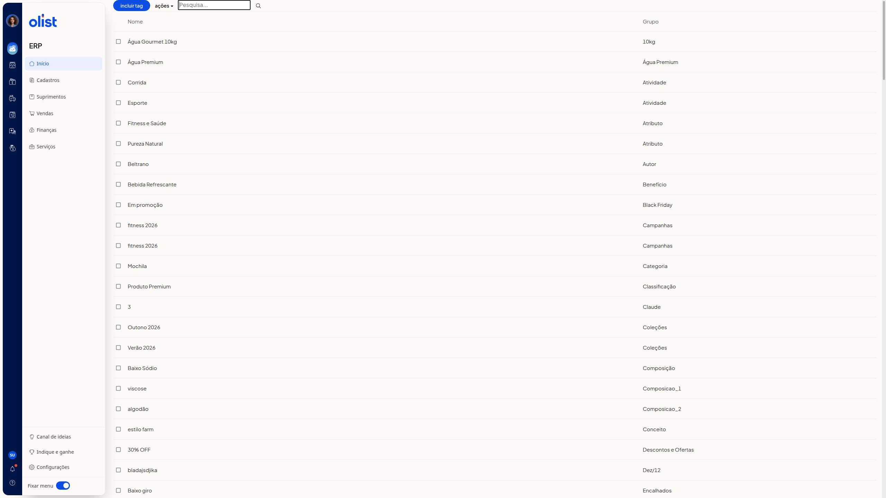
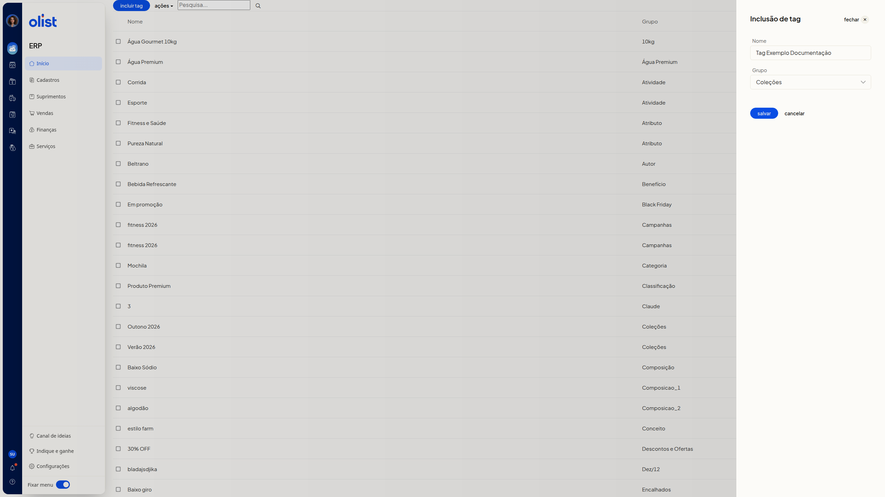

Tags de produtos
Descrição
A listagem de tags de produtos no ERP da Olist mostra as tags nas colunas Nome e Grupo. Por ela, você inclui uma nova tag e escolhe um grupo já cadastrado.
Na listagem, o botão incluir tag fica ao lado de ações e do campo Pesquisa....
Pré-requisitos
- Tenha a permissão de Tags para acessar a tela de tags de produtos.
- Tenha grupos de tags já cadastrados para escolher em Grupo.
Importante
Antes de gravar, confira o nome: ele não pode ser igual ao de outra tag já cadastrada no mesmo grupo.
Instruções
-
Clique em incluir tag, ao lado de ações e do campo Pesquisa....

-
Preencha Nome no painel Inclusão de tag. O campo não é obrigatório.
-
Selecione um grupo já cadastrado em Grupo. O campo não é obrigatório, mas já abre com um grupo selecionado e não tem opção em branco. Só é possível escolher um grupo existente.

-
Revise Nome e Grupo. Para sair do painel, use cancelar ou fechar. Para gravar a inclusão, clique em salvar. Até esse clique, a tag não entra na listagem.
Perguntas frequentes
Posso criar um grupo ao incluir a tag?
Não. Em Grupo, só é possível escolher um grupo já cadastrado.
A tag aparece na listagem antes de clicar em salvar?
Não. A tag não entra na listagem enquanto salvar não é clicado.
Links relacionados
Se precisar de ajuda, fale com o suporte.